Circles - Art series TATE LATE
Director / Concept / Design & Animation
The circle. A sacred symbol related to the divine, unlimited. It has no beginning and no end.
This is art project celebrating the circle.
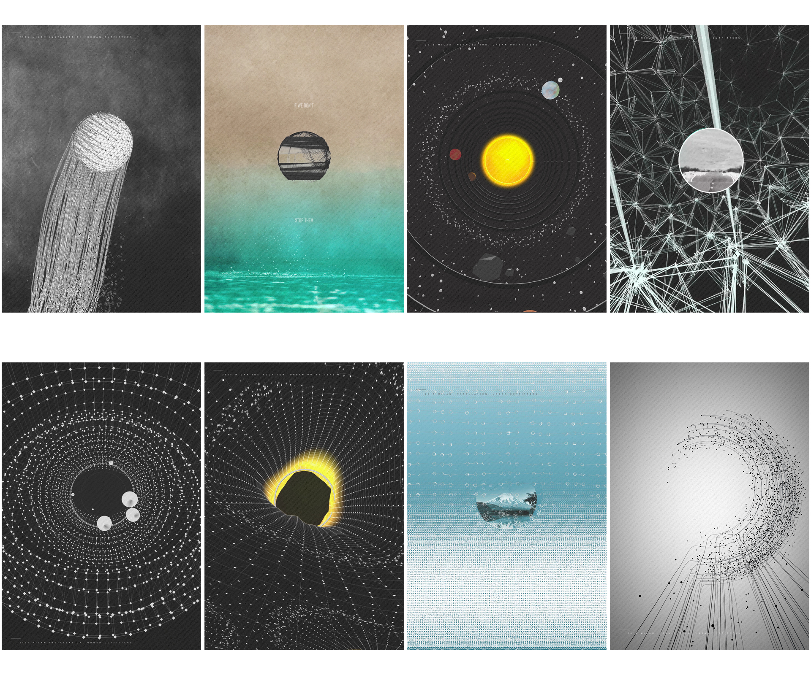
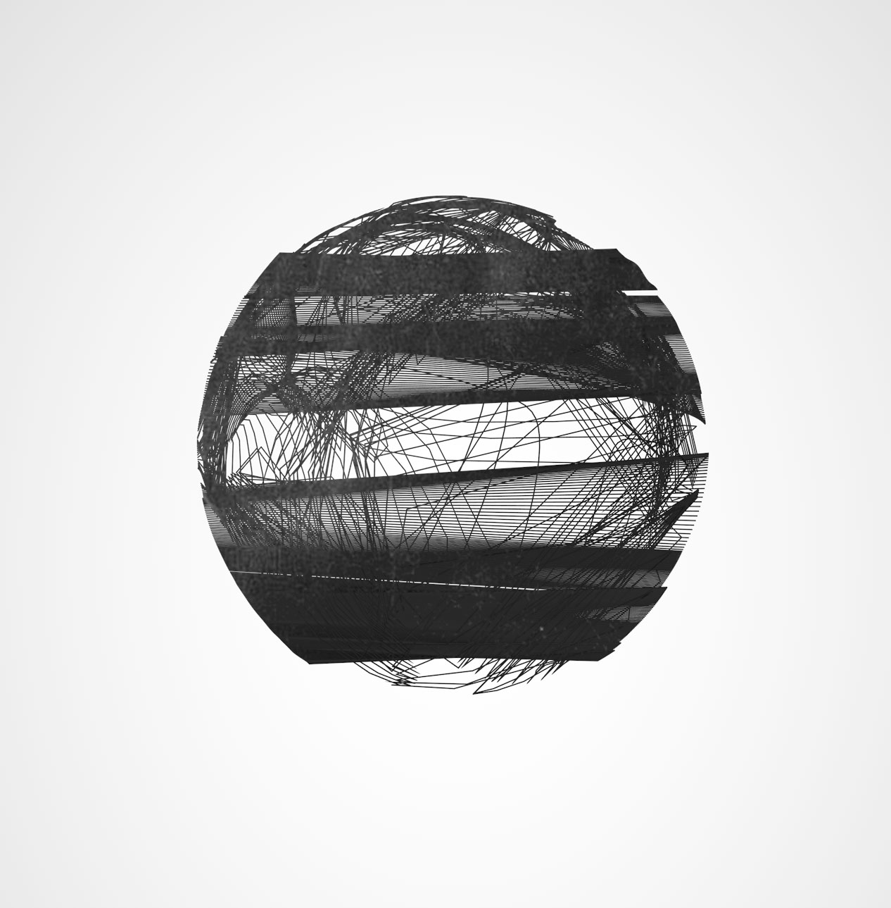
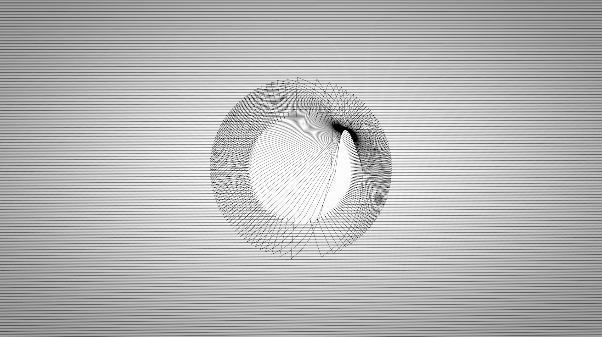
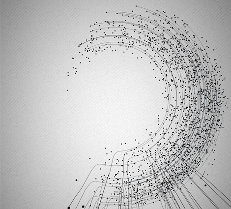

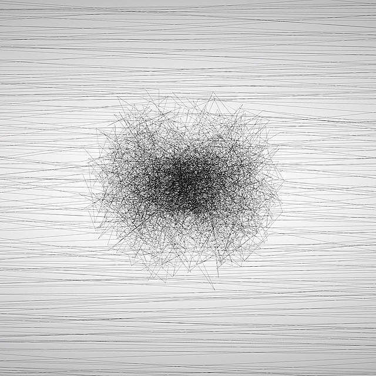
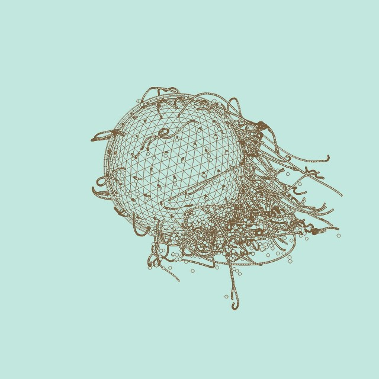
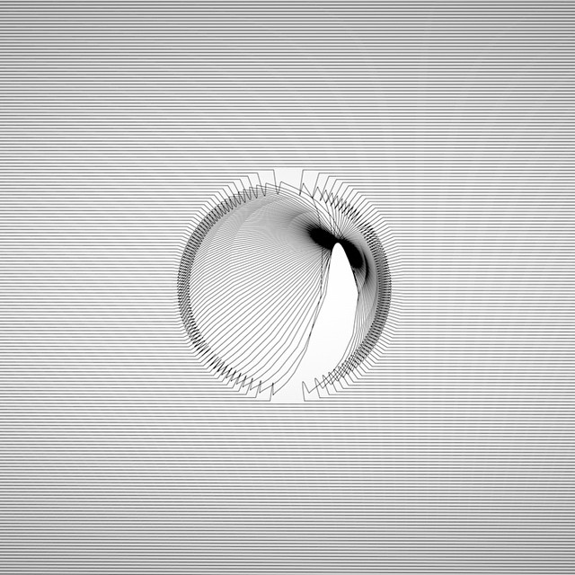
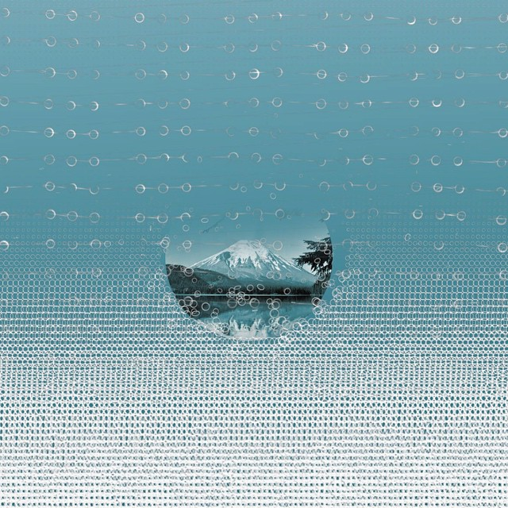
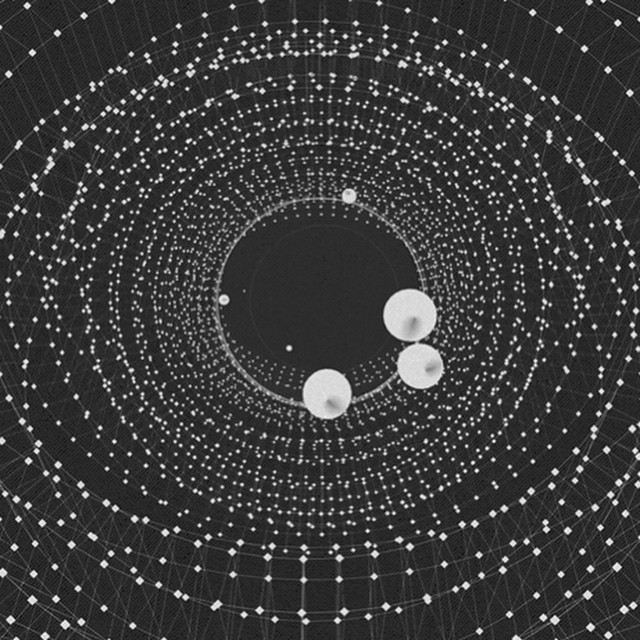
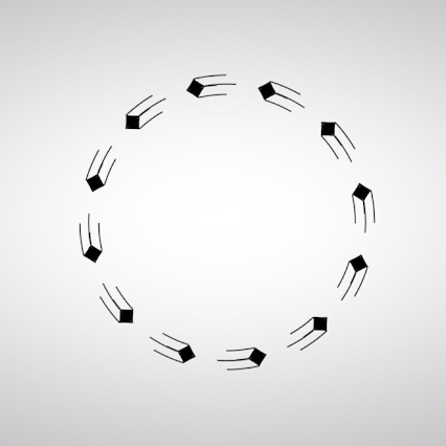
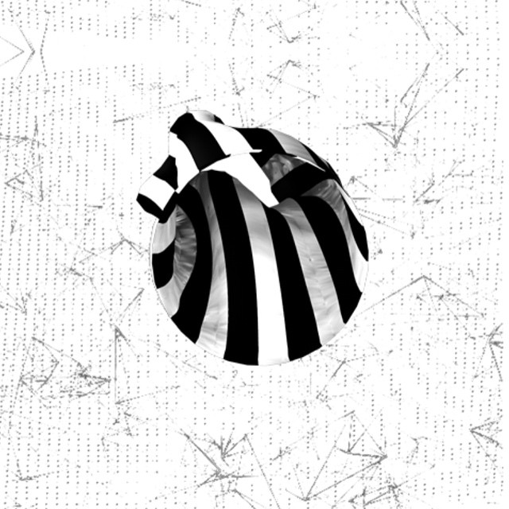
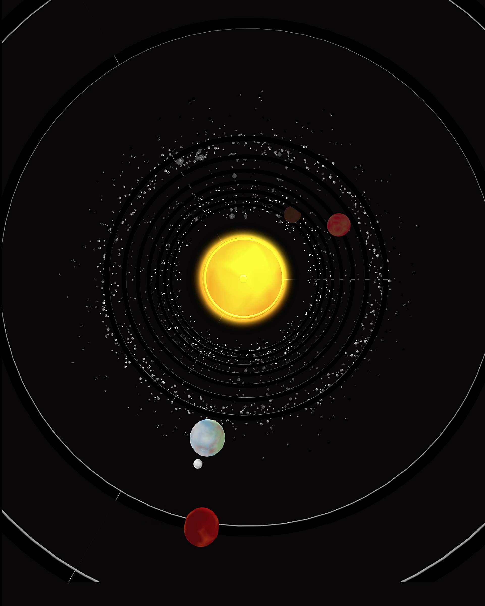